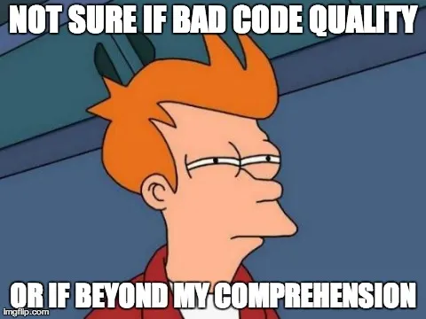

WORK IN PROGRESS
Beyond the Linter
Crafting Enduring Code
Christopher R. Bilger
October 1st, 2025
Agenda
- The Importance of Code Quality, Standards, and Best Practices
- Level-Setting: What Linters Do, Don't Do, and Why We Should Care
- The Pillars of Enduring Code Quality
- Practical Strategies for Improving Code Quality
- Real-World War Stories & Lessons Learned
- Conclusion + Q&A
The Importance of Code Quality, Standards, and Best Practices
- Why it matters
- How it impacts teams and projects
- Context of the talkiatry-app codebase
Why it matters
- Improves maintainability and readability
- Reduces bugs and technical debt
- Enhances team collaboration and productivity
- Supports long-term project success
How it impacts teams and projects
- >Fosters a culture of quality and excellence
- >Encourages knowledge sharing and mentorship
- >Facilitates onboarding and ramp-up for new team members
- >Enables better decision-making and prioritization
Context of the talkiatry-app codebase
- A real-world example of a complex, evolving codebase
- Challenges faced in maintaining code quality
- Lessons learned from past experiences
Example 1
- A critical bug caused by poor code quality
- Impact on team morale and project timeline
- Steps taken to resolve the issue
Level-Setting: What Linters Do, Don't Do, and Why We Should Care
- Overview of linters
- Common misconceptions
- Limitations of linters and static analysis tools
- Why they can't replace human judgment
- Why they are not enough, but still important
Overview of linters
- Automated tools that analyze code for potential errors and style issues
- Help enforce coding standards and best practices
- Examples: ESLint, Prettier, Pylint, RuboCop
Common misconceptions
- Linters can catch all bugs and issues
- Linters can replace code reviews and human judgment
- Linters are a one-time setup and forget solution
Limitations of linters and static analysis tools
- Cannot understand the context or intent of the code
- May produce false positives or miss certain issues
- Require regular updates and configuration to stay effective
Why they can't replace human judgment
- Code quality is subjective and context-dependent
- Human reviewers can provide insights and suggestions beyond syntax
- Collaboration and communication are key to effective code quality
Why they are not enough, but still important
- Linters are a valuable tool in the code quality toolbox
- They can catch common issues and enforce standards
- Should be used in conjunction with other practices like code reviews and testing
The Pillars of Enduring Code Quality
- Code readability and maintainability
- Consistency and standards
- Documentation and comments
- Testing and test coverage
- Refactoring and technical debt
Code readability and maintainability
- Write clear, concise, and self-explanatory code
- Use meaningful variable and function names
- Follow established coding conventions and styles
- Aim for simplicity and avoid unnecessary complexity
Consistency and standards
- Establish and adhere to coding standards and guidelines
- Use linters and formatters to enforce consistency
- Regularly review and update standards as needed
- Encourage team-wide adoption and buy-in
Documentation and comments
- Document code functionality, purpose, and usage
- Use comments to explain complex or non-obvious code
- Avoid redundant or outdated comments
- Maintain up-to-date documentation as the code evolves
Testing and test coverage
- Write automated tests to validate code functionality
- Aim for high test coverage, but prioritize quality over quantity
- Use a mix of unit, integration, and end-to-end tests
- Regularly run tests as part of the development workflow (e.g., CI/CD)
Refactoring and technical debt
- Regularly review and refactor code to improve quality
- Address technical debt proactively to prevent accumulation
- Prioritize refactoring efforts based on impact and risk
- Encourage a culture of continuous improvement
Practical Strategies for Improving Code Quality
- Code reviews and pair programming
- Automated testing and CI/CD
- Refactoring practices
- Documentation best practices
- Continuous learning and improvement
Code reviews and pair programming
- Encourage regular code reviews to catch issues early
- Foster a collaborative environment through pair programming
- Provide constructive feedback and focus on learning
- Use code reviews as an opportunity for knowledge sharing
Automated testing and CI/CD
- Integrate automated testing into the development workflow
- Use CI/CD pipelines to run tests and deploy code automatically
- Monitor test results and address failures promptly
- Continuously improve the testing suite based on feedback and coverage gaps
Refactoring practices
- Incorporate refactoring into regular development tasks
- Use techniques like code smells and design patterns to identify areas for improvement
- Encourage a culture of refactoring and continuous improvement
Documentation best practices
- Maintain clear and up-to-date documentation
- Use tools like wikis, READMEs, and inline comments effectively
- Encourage team members to contribute to documentation
- Regularly review and update documentation as the code evolves
Continuous learning and improvement
- Encourage team members to stay updated on best practices and industry trends
- Foster a culture of learning through workshops, code katas, and knowledge sharing sessions
- Regularly review and reflect on code quality practices and outcomes
- Adapt and evolve strategies based on feedback and changing needs
Real-World War Stories & Lessons Learned
- Case studies from the talkiatry-app codebase
- Common pitfalls and how to avoid them
- Success stories and positive outcomes
Case studies from the talkiatry-app codebase
- Example 1: A critical bug caused by poor code quality
- Example 2: Successful refactoring that improved maintainability
- Example 3: Implementing automated testing to catch regressions
Common pitfalls and how to avoid them
- Neglecting code reviews and relying solely on linters
- Accumulating technical debt without addressing it
- Lack of documentation leading to confusion and errors
- Inadequate testing resulting in undetected bugs
Success stories and positive outcomes
- Improved team collaboration and morale through code reviews
- Reduced bugs and technical debt through regular refactoring
- Enhanced code quality and maintainability through best practices
- Successful project outcomes driven by a commitment to quality
Conclusion + Q&A
- How We Use PostgreSQL
- Pros and Cons of Our Current Approach
- Best Practices
- Recommended Next Steps
- Q&A
